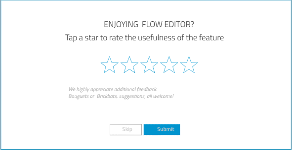

Collecting User Feedback
A pop-up survey asking for your feedback will appear for some of the features after you have been using them for some time. You will be asked to to rate the usefulness of the feature on a scale of one to five stars. You must rate the feature with at least one star if you wish to submit your rating. You are also encouraged to give additional written feedback. After you select Skip or Submit, the pop-up survey will not appear for the same feature again.

For the pop-up survey to appear, you must enable collecting statistics, and also allow collecting 4 - Detailed usage statistics in Edit > Preferences > Telemetry > Usage Statistics > Telemetry mode. You can review the submitted user feedback in Edit > Preferences > Telemetry > Usage Statistics > Collected Data by selecting Qt Quick Designer Usage of views and actions in Data sources.